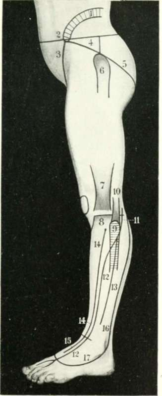
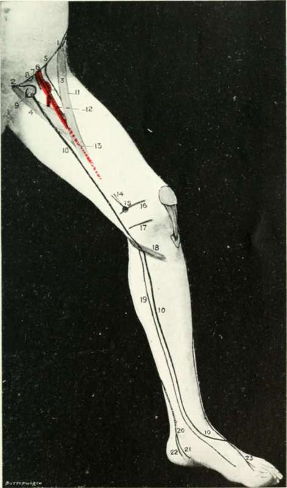

The Region Of The Knee
Description
This section is from the book "Landmarks And Surface Markings Of The Human Body", by Louis Bathe Rawling. Also available from Amazon: Landmarks and Surface Markings of the Human Body.
The Region Of The Knee
The biceps tendon forms the upper and outer boundary of the popliteal space, (Fig. XXI, 15.) and under cover of this tendon, on its inner or popliteal aspect, a cord-like structure is felt, the external popliteal or peroneal nerve. This intimate relation of tendon and of nerve must be remembered in the operation of tenotomy of the biceps tendon. (Fig. XXI, 14., Fig.XXIII.,11.)
If the biceps tendon be now traced downwards the head of the fibula is reached, this process lying below, external, and on a posterior plane to the outer tuberosity of the tibia. The styloid process of the head of the fibula projects upwards from the posterior part of the head, (Fig. XXIII, 9.) and in front of this the rounded long external lateral ligament of the knee-joint can be traced upwards to its femoral attachment. In front of the biceps tendon there is a depression which is bounded anteriorly by the broad ilio-tibial band. (Fig. XXIII, 7.) Two well-marked tendons bound the popliteal space on the upper and inner side, the semimembranosus and semitendinosus. The latter is the more external, (Fig. XXI, 16,17) more superficial, and the narrower, and the long rounded tendon can be traced some distance up into the thigh. The semimembranosus tendon lies to the inner side of the semitendinosus and on a deeper plane. The broad tendon can be traced downwards to its insertion into the inner and posterior aspect of the internal tuberosity of the tibia. On the inner aspect of the knee the tendon of the gracilis muscle and the lower part of the sartorius muscle form a fairly well-marked prominence, the individual muscles being, however, usually incapable of clear definition owing to their flattened shape. Between these tendons and the prominent vastus internus muscle a depression exists, (Fig. XXIV, 14.) and by deep palpation the adductor magnus tendon may be felt lying under cover of the inner margin of the vastus internus muscle. By tracing this tendon downwards to its insertion the adductor tubercle is reached. (Fig. XXIV, 15., Fig. XXIV, 16.)
Fig. XXIII. The Side Of The Thigh And Leg
1. The iliac crest.
2. The anterior superior iliac spine.
3. Poupart's ligament.
5. Nelaton's line.
6. The great trochanter.
7. The ilio-tibial band.
8. The outer tibial tuberosity.
9. The head of the fibula.
10. The biceps tendon.
11. The peroneal nerve.
12. The anterior tibial nerve.
13. The musculo-cutaneous nerve.
14. The anterior tibial artery.
15. The dorsalis pedis artery.
16. The external saphenous vein.
17. The venous arch.
Fig. XXIV. The Side Of The Thigh And Leg
1. The anterior superior iliac spine.
2. The pubic spines.
3. The sartorius muscle.
4. The adductor longus muscle.
5. The anterior crural nerve.
6. The common femoral artery.
7. The common femoral vein.
8. The femoral ring.
9. The saphenous opening.
10.The internal or long saphenous vein.
11. The profunda femoris artery.
12. The superficial femoral in Scarpa's triangle.
13. The superficial femoral in Hunter's canal.
14. The adductor magnus tendon.
15. The adductor tubercle.
16. The lower epiphysial line of the femur.
17. The line of the knee-joint.
18. The gracilis, sartorius, and semitendinosus muscles.
19. The internal saphenous nerve.
20. The posterior tibial artery.
21. The internal plantar artery.
22. The external plantar artery.
23. The anterior tibial nerve.
This tubercle corresponds also to the level of the lower epiphysial line of the femur.
The sartorius and gracilis muscles, though not easily defined on the inner side of the knee, form, together with the semitendinosus muscle, fairly well-marked elevation below the internal tuberosity of the tibia, which is directed downwards, forwards, and outwards. (Fig. XXIV, 18.)
The ligamentum patellae narrows off as it passes from the inferior border of the patella to the tibial tuberosity, (Fig. XXII, 13.) and on each side of the ligament depressions exist, in the lower part of which the inner and outer tuberosities of the tibia are readily felt.
The prepatellar bursa extends from the middle of the patella to the tibial tubercle. Laterally, the bursa falls just short of the patellar border.
The synovial membrane of the knee-joint extends upwards about three fingers' breadth above the upper border of the patella when the leg is in the extended position, (Fig. XXII, 11.) reaching up under the vastus internus to a slightly higher level than on the other side. Laterally, the synovial membrane extends to near the inner and outer margins of the femoral condyles, whilst the lower limit is situated just above the tubercle of the tibia. When the joint is distended with fluid the outline of the joint cavity becomes marked, and the depressions which normally exist each side of the patellar ligament become obliterated.
Continue to: